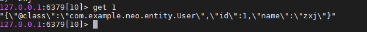
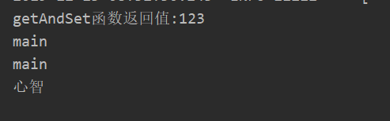

Spring Boot中除了对常用的关系型数据库提供了优秀的自动化支持之外，对于很多NoSQL数据库一样提供了自动化配置的支持，包括：Redis, MongoDB, Elasticsearch, Solr和Cassandra。
项目传送门
快速使用 Redis是一个开源的使用ANSI C语言编写、支持网络、可基于内存亦可持久化的日志型、Key-Value数据库。
点击这里查看Redis
首先保证安装好redis，并开启远程访问权限**bind 0.0.0.0**
引入依赖 1 2 3 4 <dependency > <groupId > org.springframework.boot</groupId > <artifactId > spring-boot-starter-data-redis</artifactId > </dependency >
Spring Boot 的 spring-boot-starter-data-redis 为 Redis 的相关操作提供了一个高度封装的 RedisTemplate 类，。
而且对每种类型的数据结构都进行了归类，将同一类型操作封装为 operation 接口。
RedisTemplate 对五种数据结构分别定义了操作，如下所示：
操作字符串：redisTemplate.opsForValue()
操作 Hash：redisTemplate.opsForHash()
操作 List：redisTemplate.opsForList()
操作 Set：redisTemplate.opsForSet()
操作 ZSet：redisTemplate.opsForZSet()
但是对于 string 类型的数据，Spring Boot 还专门提供了 StringRedisTemplate 类，而且官方也建议使用该类来操作 String 类型的数据。
那么它和 RedisTemplate 又有啥区别呢？
RedisTemplate 是一个泛型类，而 StringRedisTemplate 不是，后者只能对键和值都为 String 类型的数据进行操作，而前者则可以操作任何类型。两者的数据是不共通的，StringRedisTemplate 只能管理 StringRedisTemplate 里面的数据，RedisTemplate 只能管理 RedisTemplate 中 的数据。
配置连接信息 本次使用application.yml形式的配置文件
1 2 3 4 5 6 7 8 9 10 11 12 13 14 15 spring: redis: database: 10 host: 192.168 .174 .129 port: 6379 timeout: 3000 jedis: pool: max-active: 8 max-idle: 8 max-wait: -1ms min-idle: 0
RedisTemplate 的配置一个 Spring Boot 项目中，我们只需要维护一个 RedisTemplate 对象和一个 StringRedisTemplate 对象就可以了。所以我们需要通过一个 Configuration 类来初始化这两个对象并且交由的 BeanFactory 管理。
建立如下的redisTemplate配置类；这个配置类对操作<String,other>提供了支持，当我们想在value中添加T类型的时候，引入此Bean操作，他把T类型进行了GenericJackson2JsonRedisSerializer序列化，因为对象跨平台传输需要序列化，虽然存储在redis里不是我们想要看的对象样子，但是我们用对象接受的话就会变为原来的样子。
我们需只要这样引用
1 2 3 @Autowired @Qualifier("objectRedisTemplate") RedisTemplate<String, User> redisTemplate;
1 2 3 4 5 6 7 8 9 10 11 12 13 14 15 16 17 18 19 20 21 22 23 24 25 26 27 28 29 30 31 32 33 34 35 36 37 import org.springframework.boot.autoconfigure.condition.ConditionalOnMissingBean;import org.springframework.context.annotation.Bean;import org.springframework.context.annotation.Configuration;import org.springframework.data.redis.connection.RedisConnectionFactory;import org.springframework.data.redis.core.RedisTemplate;import org.springframework.data.redis.core.StringRedisTemplate;import org.springframework.data.redis.serializer.GenericJackson2JsonRedisSerializer;import org.springframework.data.redis.serializer.RedisSerializer;import org.springframework.data.redis.serializer.StringRedisSerializer;@Configuration public class RedisConfig @Bean("objectRedisTemplate") public <T> RedisTemplate<String, T> objectRedisTemplate (RedisConnectionFactory redisConnectionFactory) { RedisTemplate<String, T> redisTemplate = new RedisTemplate<>(); redisTemplate.setConnectionFactory(redisConnectionFactory); RedisSerializer<String> serializer = new StringRedisSerializer(); redisTemplate.setKeySerializer(serializer); redisTemplate.setHashKeySerializer(serializer); redisTemplate.setValueSerializer(new GenericJackson2JsonRedisSerializer()); return redisTemplate; } @Bean @ConditionalOnMissingBean(StringRedisTemplate.class) public StringRedisTemplate stringRedisTemplate ( RedisConnectionFactory redisConnectionFactory) StringRedisTemplate template = new StringRedisTemplate(); template.setConnectionFactory(redisConnectionFactory); return template; } }
通过例子验证一下序列化的问题：
1 2 3 4 5 6 7 @Test public void xulie () redisTemplate.opsForValue().set("1" , new User(1 , "zxj" )); System.out.println(redisTemplate.opsForValue().get("1" )); }
redis获取值：

用程序使用User对象接收：
操作 1 2 3 4 5 6 7 @Autowired RedisTemplate<String, String> redisTemplateForString; @Autowired StringRedisTemplate stringRedisTemplate; @Autowired @Qualifier("objectRedisTemplate") RedisTemplate<String, User> redisTemplate;
string
序号
方法
描述
1
set(…)
添加k-v
2
setIfAbsent(k,v)
如果k不存在则新建，存在则不进行操作
3
multiGet(list)
批量获取key对应的值
4
multiSet(Map)
批量插入k-v
5
getAndSet(k,v)
设置键的字符串值并返回其旧值
6
size(k)
返回key所对应的value值得长度
使用不同的对象添加string数据
1 2 3 4 5 6 7 8 9 10 11 12 13 14 15 16 17 18 19 20 21 22 @Test void addStringValue () stringRedisTemplate.opsForValue().set("zxj" , "main" ); stringRedisTemplate.opsForValue().set("zxj1" , "main" ); redisTemplateForString.opsForValue().set("k1" , "123" ); redisTemplateForString.opsForValue().setIfAbsent("k1" , "311" ); String oldValue = stringRedisTemplate.opsForValue().getAndSet("k1" , "心智" ); System.out.println("getAndSet函数返回值:" + oldValue); List<String> list = new ArrayList<>(); list.add("zxj" ); list.add("zxj1" ); list.add("k1" ); List<String> get = stringRedisTemplate.opsForValue().multiGet(list); for (String s : get) { System.out.println(s); } }
两者都可操作成功，但是官网建议使用StringRedisTemplate来操作string类型。
因为指定泛型<String,String>的RedisTemplate==StringRedisTemplate。
请看定义public class StringRedisTemplate extends RedisTemplate<String, String>

删除key
2种方法，通过key输出单个，通过Collection批量
1 2 3 4 5 6 7 8 9 10 11 12 @Test void deleteByKeyOrCollection () stringRedisTemplate.opsForValue().set("zxj" , "main" ); stringRedisTemplate.opsForValue().set("zxj1" , "main" ); redisTemplateForString.opsForValue().set("k1" , "123" ); stringRedisTemplate.delete("k1" ); ArrayList<String> list = new ArrayList<>(); list.add("zxj" ); list.add("zxj1" ); redisTemplateForString.delete(list); }
通过以上的代码，发现stringRedisTemplate创建的值可以被redisTemplateForString删除，反之亦如此。
查询
1 2 3 4 @Test void getString () System.out.println(stringRedisTemplate.opsForValue().get("zxj" )); }
批量插入和批量获取
multiSetIfAbsent Boolean multiSetIfAbsent(Map<? extends K, ? extends V> m);
1 2 3 4 5 6 7 8 9 10 11 12 13 14 15 16 17 @Test void multiForString () HashMap<String, String> map = new HashMap<>(); map.put("p1" , "p1" ); map.put("p2" , "p2" ); map.put("p3" , "p3" ); ArrayList<String> list = new ArrayList<>(); list.add("p1" ); list.add("p2" ); list.add("p3" ); stringRedisTemplate.opsForValue().multiSet(map); List<String> strings = stringRedisTemplate.opsForValue().multiGet(list); for (String s : strings) { System.out.println(s); } }
list
序号
list方法
描述
1
range(key, start ,end)
返回key的列表索引start-end的元素
2
trim(key ,start, end)
修建key的列表，让他只存在索引内的元素
3
size(key)
返回长度
4
leftPush(k,v)
从左侧插入元素，如果列表不存在先创建后插入
5
leftPushAll(k,…V)
从左侧插入一个或多个元素
6
leftPushAll(k,Collection)
同上
7
rightPush(k,v)
将所有指定的值插入存储在键的列表的头部。如果键不存在，则在执行推送操作之前将其创建为空列表。（从右边插入）
8
rightPushAll(k,…V)
-
9
rightPushAll(k,Collection)
-
10
set(K key, long index, V value)
在列表中index的位置设置value值
11
Long remove(K key, long count, Object value);
从存储在键中的列表中删除等于值的元素的第一个计数事件。计数参数以下列方式影响操作：
12
index(K key, long index)
根据下表获取列表中的值，下标是从0开始的
13
leftPop(K key);
弹出最左边的元素，弹出之后该值在列表中将不复存在
1 2 3 4 5 6 @Autowired @Qualifier("objectRedisTemplate") RedisTemplate<String, User> redisTemplate; @Autowired @Qualifier("objectRedisTemplate") RedisTemplate<String, Integer> redisList;
1 2 3 4 5 6 7 8 9 10 11 12 13 14 15 16 17 18 19 @Test public void list () ListOperations<String, User> opsForUser = redisTemplate.opsForList(); ListOperations<String, Integer> opsForInt = redisList.opsForList(); opsForInt.rightPushAll("list" , 1 , 2 , 3 , 4 , 5 ); System.out.println("列表的长度" + opsForInt.size("list" )); Integer list = opsForInt.rightPop("list" ); System.out.println("已删除的右侧第一元素为" + list); List<Integer> range = opsForInt.range("list" , 0 , 5 ); for (Integer integer : range) { System.out.println(integer); } }
set Redis的Set是string类型的无序集合。集合成员是唯一的，这就意味着集合中不能出现重复的数据。
序号
set方法
描述
1
add(k, …v)
向k的集合加入一个或多个元素
2
remove(k, …v)
k对应的集合删除一个或多个元素
3
pop(k)
移除并返回集合的一个随机元素
4
move(k,v,k1)
将k集合中的元素移动到k1集合
5
size(k)
6
isMember(k,v)
判断元素v是否是k中的成员
7
members(k)
返回集合中所有成员
8
scan(K key, ScanOptions options);
遍历set
1 2 3 4 5 6 7 8 9 10 11 12 13 14 15 16 17 @Test public void set () SetOperations<String, User> setOperations = redisTemplate.opsForSet(); setOperations.add("set" , new User(1 , "zxj" ), new User(2 , "xj" ), new User(3 , "j" )); System.out.println(setOperations.size("set" )); User zxj = new User(1 , "zxj" ); System.out.println(setOperations.isMember("set" , zxj)); setOperations.pop("set" ); Set<User> set = setOperations.members("set" ); for (User user : set) { System.out.println(user); } }
hash public interface HashOperations<key,field,value>
key是k-hash的key
hash类型是k-hash，field是hash中的k
value是hash中的值
序号
hash方法
描述
1
put(key, Field, Value)
给key的hash添加field列值为Value
2
putAll(key, Map)
给key的hash表添加map中的所有field-value
3
delete(key, Object… fields)
删除key对应的Hash表的一个或多个field
4
hasKey(key, Object hashkey)
判断key对应的field列是否存在
5
get(key, Object hashkey)
得到Key的hash表里面的hashkey属性
6
multiGet(key, Collection fields)
批量获取key对应的hash表的一些列
7
keys(key)
获得key对应的hash的所有field
8
size(key)
返回hash中散列表的个数
9
putIfAbsent(key, field, value)
仅当field不存在时才设置散列value的值。
10
values(key)
获取整个hash中所有的value
11
entries(key)
获取整个hash数据
1 2 3 4 5 6 7 8 9 10 11 12 13 14 15 16 17 18 19 20 21 22 23 24 25 26 27 28 29 30 31 32 33 34 35 36 37 38 @Test public void hash () HashOperations<String, String, Object> hos = redisTemplate.opsForHash(); HashMap<String, Object> map = new HashMap<>(); map.put("name" , "zxj" ); map.put("age" , 18 ); map.put("obj" , new User(1 , "zxj" )); hos.putAll("hash" , map); hos.putIfAbsent("hash" , "age" , 20 ); hos.putIfAbsent("hash" , "tesxt" , 20 ); ArrayList<String> list = new ArrayList<>(); list.add("name" ); list.add("age" ); list.add("obj" ); list.add("tesxt" ); List<Object> hash = hos.multiGet("hash" , list); System.out.println("multiGet获取指定多个列：" ); for (Object o : hash) { System.out.println(o); } System.out.println("size获取大小:" + hos.size("hash" )); Map<String, Object> hash1 = hos.entries("hash" ); List<Object> hash2 = hos.values("hash" ); }
zset Redis有序集合和无序集合一样也是string类型元素的集合,且不允许重复的成员。
序号
方法
描述
1
add(K key, V value, double score);
新增一个有序集合，存在的话为false，不存在的话为true
2
add(K key, Set<TypedTuple<V>tuples);
新增一个有序集合
3
remove(K key, Object… values);
从有序集合中移除一个或者多个元素
4
range(K key, long start, long end);
通过索引区间返回有序集合成指定区间内的成员，其中有序集成员按分数值递增(从小到大)顺序排列
1 2 3 4 5 6 7 8 9 10 11 12 13 14 @Test public void zset () ZSetOperations<String, Integer> operations = redisList.opsForZSet(); operations.add("z" , 1 ,9 ); operations.add("z" , 2 ,8 ); operations.add("z" , 3 ,7 ); operations.add("z" , 4 ,3 ); operations.add("z" , 5 ,6 ); operations.add("z" , 6 ,8 ); System.out.println(operations.range("z" , 0 , 100 )); System.out.println(operations.rangeByScore("z" , 3 , 6 )); }
参考链接 Spring中使用RedisTemplate操作Redis